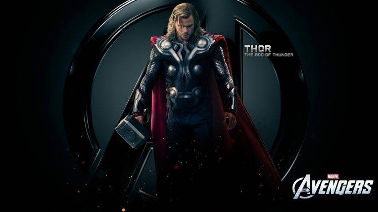
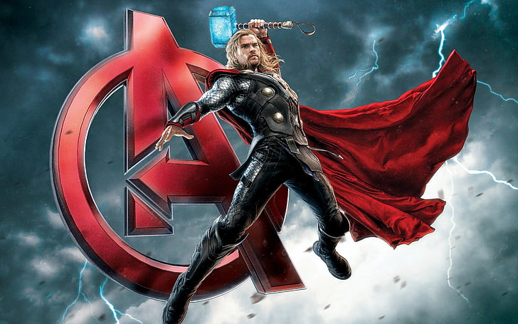
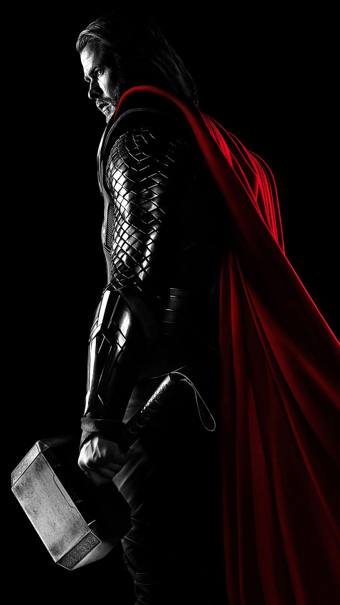
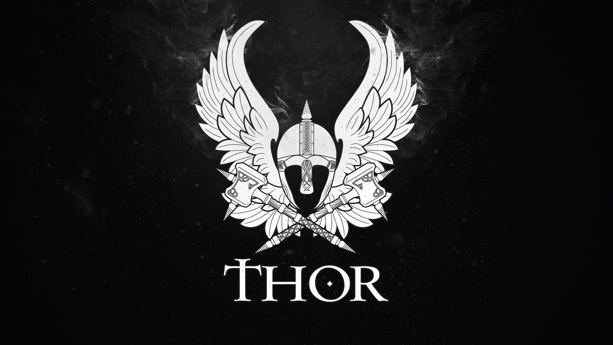

Thor is a prominent god in Germanic paganism. In Norse mythology, he is a hammer-wielding god associated with lightning, thunder, storms, sacred groves and trees, strength, the protection of mankind, hallowing, and fertility. Besides Old Norse Þórr, the deity occurs in Old English as Þunor, in Old Frisian as Thuner, in Old Saxon as Thunar, and in Old High German as Donar, all ultimately stemming from the Proto-Germanic theonym , meaning 'Thunder'.Thor is a prominently mentioned god throughout the recorded history of the Germanic peoples, from the Roman occupation of regions of Germania, to the Germanic expansions of the Migration Period, to his high popularity during the Viking Age, when, in the face of the process of the Christianization of Scandinavia, emblems of his hammer, Mjölnir, were worn and Norse pagan personal names containing the name of the god bear witness to his popularity.
| Thor | Thor | Thor |
|---|---|---|
|  | Due to the nature of the Germanic corpus, narratives featuring Thor are only attested in Old Norse, where Thor appears throughout Norse mythology. Norse mythology, largely recorded in Iceland from traditional material stemming from Scandinavia, provides numerous tales featuring the god. In these sources, Thor bears at least fifteen names, is the husband of the golden-haired goddess Sif, is the lover of the jötunn Járnsaxa, and is generally described as fierce eyed, with red hair and red beard.[1] With Sif, Thor fathered the goddess (and possible valkyrie) Þrúðr; with Járnsaxa, he fathered Magni; with a mother whose name is not recorded, he fathered Móði, and he is the stepfather of the god Ullr. Thor is the son of Odin and Jörð,[2] by way of his father Odin, he has numerous brothers, including Baldr. Thor has two servants, Þjálfi and Röskva, rides in a cart or chariot pulled by two goats, Tanngrisnir and Tanngnjóstr (that he eats and resurrects), and is ascribed three dwellings (Bilskirnir, Þrúðheimr, and Þrúðvangr). Thor wields the hammer Mjölnir, wears the belt Megingjörð and the iron gloves Járngreipr, and owns the staff Gríðarvölr. Thor's exploits, including his relentless slaughter of his foes and fierce battles with the monstrous serpent Jörmungandr—and their foretold mutual deaths during the events of Ragnarök—are recorded throughout sources for Norse mythology. |
 |
Into the modern period, Thor continued to be acknowledged in rural folklore throughout Germanic-speaking Europe. Thor is frequently referred to in place names, the day of the week Thursday bears his name (modern English Thursday derives from Old English þunresdæġ, 'Þunor's day'), and names stemming from the pagan period containing his own continue to be used today, particularly in Scandinavia. Thor has inspired numerous works of art and references to Thor appear in modern popular culture. Like other Germanic deities, veneration of Thor is revived in the modern period in Heathenry.> |
 |  |